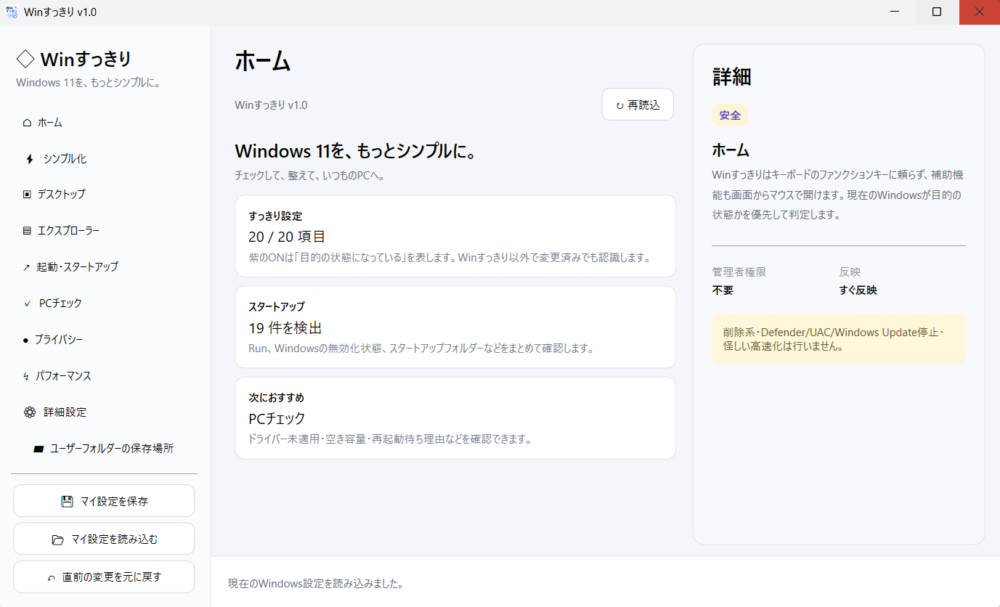
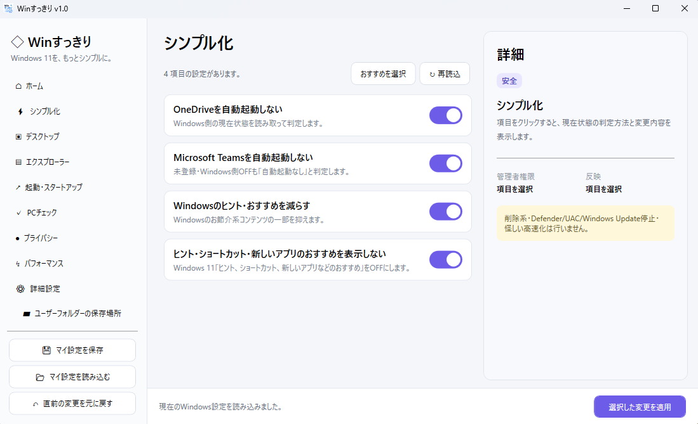
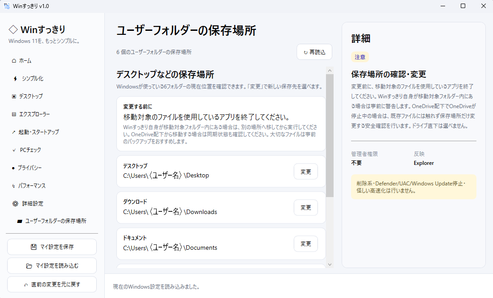

Winすっきりとは
Winすっきりは、Windows 11の初期設定や日常的な設定変更を、 ひとつの画面から分かりやすく行うためのWindows用ユーティリティです。
不要ファイルを自動削除するクリーナーや、 無理な「高速化」を行うソフトではありません。
Windowsで普段手作業している設定を、 現在の状態を確認しながら整理・変更することを目的にしています。
主な機能
Windowsのシンプル化
Windowsのヒント・おすすめなど、 日常利用で気になる表示設定をまとめて確認できます。
自動起動の管理
OneDrive、Microsoft Teamsなどの自動起動設定や、 Windowsのスタートアップ項目を確認・切り替えできます。
エクスプローラー関連
デスクトップやエクスプローラーに関する設定を、 現在の状態を確認しながら変更できます。
ユーザーフォルダー
デスクトップ、ダウンロード、ドキュメント、ピクチャ、 ミュージック、ビデオの保存場所を確認・変更できます。
PCチェック・詳細設定
PCの状態確認や、プライバシー・パフォーマンス関連などの 各種設定をまとめて確認できます。
設定の保存・復元
マイ設定の保存・読み込みや、 直前に行った変更を元に戻す機能を備えています。
画面

Winすっきり ホーム画面

Windowsのシンプル化設定

ユーザーフォルダーの保存場所確認・変更
対応環境
使い方
- GitHub Releasesから最新版のZIPファイルをダウンロードします。
- ZIPファイルを任意の場所へ展開します。
- WinSukkiri.exe をダブルクリックして起動します。
- 変更したい項目を選び、内容を確認して適用します。
設定によっては、サインアウトや再起動後に完全に反映される場合があります。
注意事項
- WinすっきりはWindowsの各種設定やレジストリ等を変更します。 重要なデータは事前にバックアップすることをおすすめします。
- 会社や学校など管理されたPCでは、 管理者の設定やポリシーにより変更できない項目があります。
- Windows Update等により、 将来一部の機能が利用できなくなる場合があります。
- ユーザーフォルダーの保存場所を変更する場合は、 対象フォルダー内のファイルを使用しているアプリを終了してください。
- OneDrive配下から移動する場合は、 同期状態を確認してから実行してください。
- 自動ログインは利便性が上がる一方、 PCを操作できる人がそのままアカウントへアクセスできる状態になります。 共有PCや持ち運ぶPCでは注意してください。
Download / Source
最新版、更新履歴、ソースコードは GitHub上の公式リポジトリから確認できます。